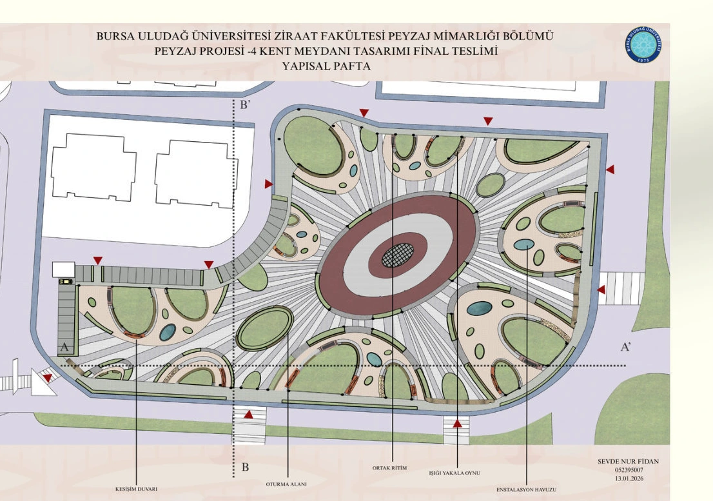
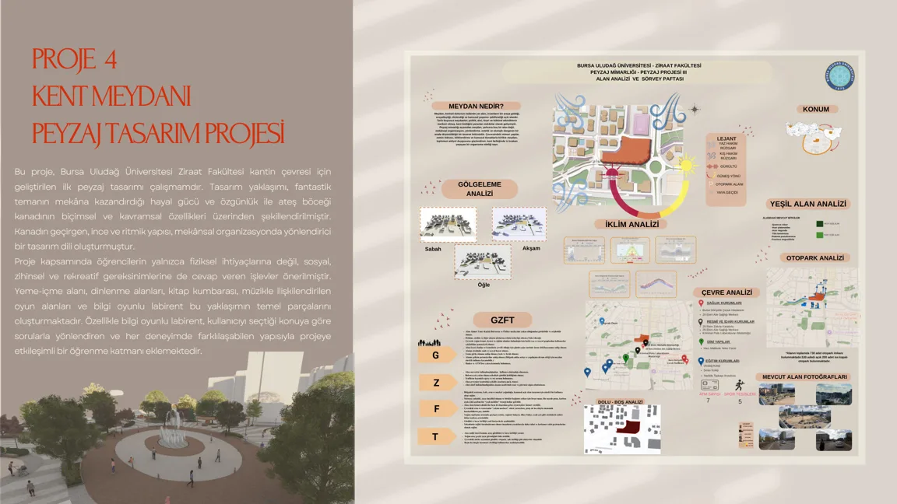
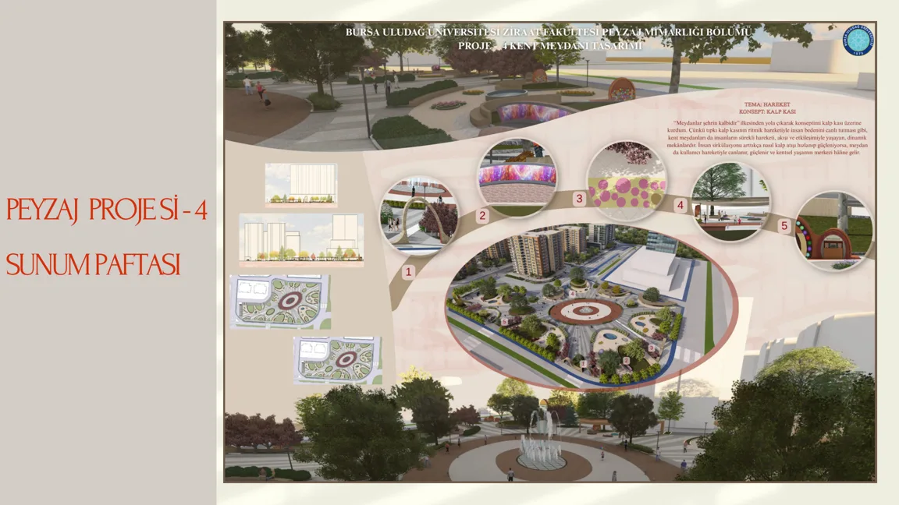
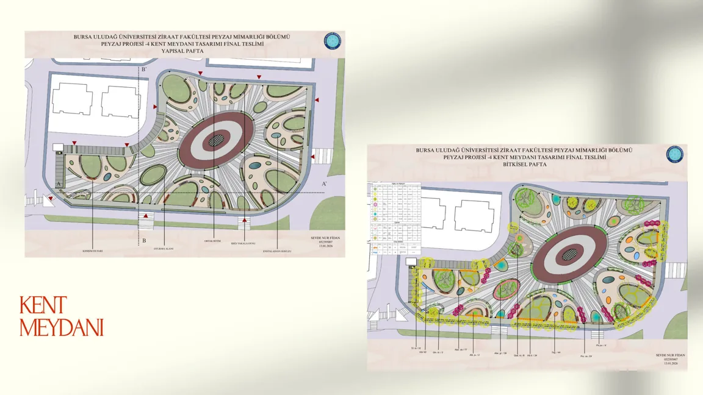
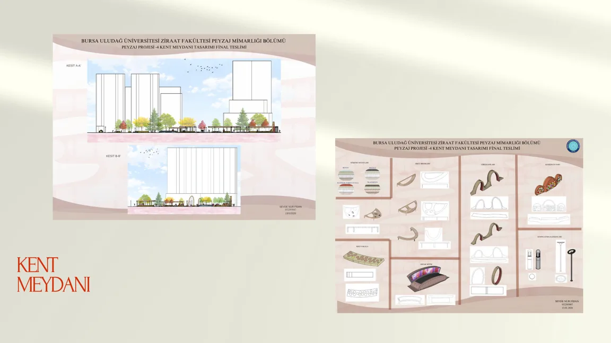
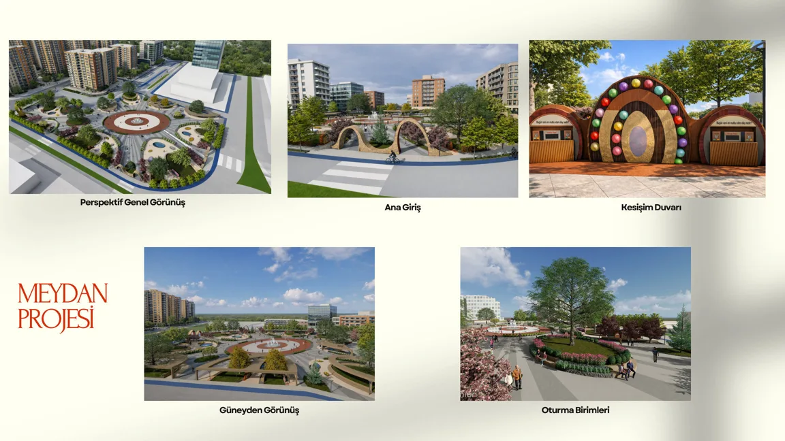
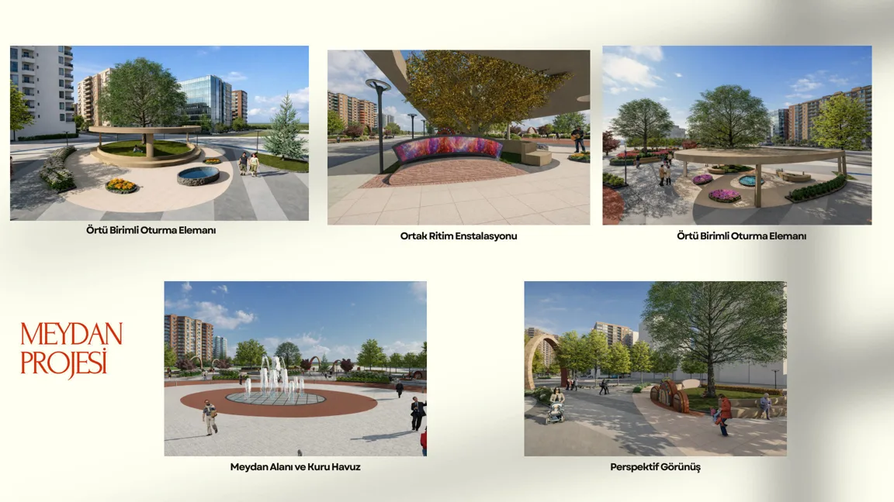

Kent Meydanı Projesi - Bursa / Özlüce
Bursa / Özlüce

01 / Proje yaklaşımı
Kullanıcı etkileşimi, kamusal yaşam ve deneyimsel mekân kurgusuna odaklanan kent meydanı tasarımı.

Çizimden
peyzaja.
Orijinal portfolyodan proje paftaları. Paftalardaki açıklamalar Türkçedir.





